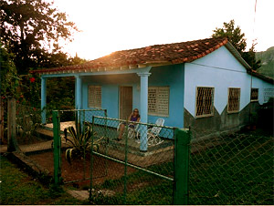

Casa Azul
Varadero, Cuba
Casa Azul offers a very clean and nice casa particular bungalow that is totally independent and completely airconditioned. Its location is one of the best in Varadero, a few meters from the beach and a ranchon for food and drinks.
Leyla and her family are living in front - beside the bungalow.
Amenities
Air Conditioner, Breakfast and dinner service, Double Bed, Extra outside shower, Garden, Kitchen facilities, Parking, Private Bathroom, Private entrance, Phone, Refrigerator, Terrace, Twin beds, TV